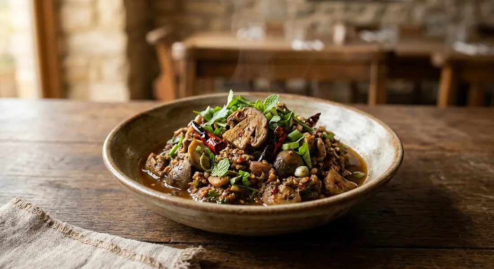

Straw mushrooms and chillies roasted together, pounded with shallots and garlic, seasoned with fermented fish sauce and lime — the Isaan jaew that makes a dip of the mushroom basket.

แจ่ว (jaew) in Isaan is a family of roasted-and-pounded relishes — the smoke comes first, the mortar second, and the seasoning last. แจ่วเห็ด swaps the usual meat for เห็ดฟาง, straw mushrooms, the common field mushroom of Thai markets. Kapook's Isaan cook writes that in her village they are เห็ดเฟือง, and the same dip answers to four names depending on who is speaking: แจ่วเห็ดฟาง, แจ่วปลาร้าเห็ดฟาง, ป่นเห็ดฟาง and น้ำพริกเห็ดฟาง.
The technique barely changes across sources. Everything gets fire first — chillies, shallots and garlic roasted dry in a pan or over charcoal until blistered, the mushrooms roasted or grilled after them — then the mortar does the mixing, and น้ำปลาร้า, the Isaan fermented fish sauce, does the flavouring. Wongnai's version adds lime and sugar to round it; Krua.co's northern-inflected version roasts tomatoes and young galangal into the pound.
It is a dip for the table's edges: sticky rice pressed into it, steamed vegetables, raw herbs. Wongnai's cook posts her recipe with one line of instruction to the reader — เอาข้าวเหนียวมาจิ้มโล๊ด, "take your sticky rice and dip."
| Thai | English | Amount |
|---|---|---|
| เห็ดฟาง | Straw mushrooms | 200 g |
| พริกขี้หนู | Bird's eye chillies | 15 |
| หอมแดง | Shallots | 5 |
| กระเทียม | Garlic cloves | 10 |
| น้ำปลา | Fish sauce | 2 tbsp |
| น้ำปลาร้า | Nam pla ra (fermented fish sauce) | 2 tbsp |
| มะนาว | Limes | 1–2 |
| น้ำตาลทราย | Sugar | 1 tsp |
| ต้นหอมผักชี | Spring onion and coriander, chopped | 2 tbsp |
The pure pot (Cookpad, Chana D.): 200 g straw mushrooms, chillies, shallots and garlic roasted, mushrooms grilled on skewers or in an air fryer, everything pounded together and seasoned with nothing but น้ำปลาร้า — "seasoning with nam pla ra alone is already delicious." The Isaan market pot (Kapook Creator, iTha): two handfuls of straw mushrooms, a pinch of Karen chillies, a fistful of onion, spring onion and coriander, MSG and Rosdee powder, two spoons of nam pla ra, a splash of fish sauce and half a lime. The northern-tinged pot (Krua.co): straw mushrooms plus เห็ดกระด้าง, green and red bird's eye chillies, chopped young galangal, ten shallots, a head of garlic and three sida tomatoes — all charred over charcoal, pounded fine, seasoned with boiled pla ra, fish sauce and water, served with steamed vegetables and sticky rice.
The seasoning. Cookpad seasons with nam pla ra and nothing else. Kapook's cook adds fish sauce, MSG and Rosdee powder on top of the pla ra. Wongnai skips pla ra entirely — fish sauce, lime and sugar. Krua.co boils the pla ra before it goes in and thins the paste with water. The funk dial runs from pure to absent.
The sour. Lime in Wongnai's and Kapook's pots — "one to two limes" — and none at all in Cookpad's and Krua.co's. The southern-Isaan pots lean on the pla ra's own ferment for the acid.
Sugar. Only Wongnai sweetens, a teaspoon or two. Everyone else lets the roasted shallots and mushrooms carry the sweetness.
Galangal and tomatoes. Krua.co alone adds chopped young galangal and roasted sida tomatoes to the pound, pulling the relish towards northern nam prik territory. The other sources keep it to chillies, shallots, garlic and herbs.
How the mushrooms cook. Wongnai pan-roasts them with the aromatics; Cookpad grills them on skewers or air-fries; Lemon8's cooks steam or grill. All agree they must be cooked before the pound.
The mushroom. Straw mushrooms everywhere — the classic, cheap field mushroom. Krua.co doubles up with เห็ดกระด้าง ("hard mushrooms", a firmer woodland type) for texture. The dish is really about the straw mushroom, and the name usually says so: แจ่วเห็ดฟาง.
This recipe is translated from the following Thai-language sources. Where they disagree, we've said so.
1. Wongnai — "แจ่วเห็ดฟาง" by ImAiw Wattanakorn (the recipe used here: the water-roast and lime-sugar seasoning) — wongnai.com
2. Cookpad — "ป่นเห็ดฟาง" by Chana D. (the pla-ra-only seasoning, grilled mushrooms) — cookpad.com
3. Kapook Creator — "แจ่วปลาร้าเห็ดฟาง เมนูอาหารอีสานบ้านเฮา" by iTha (the Isaan market pot with Karen chillies) — creator.kapook.com
4. Krua.co — "แจ่วเห็ด" (the charcoal-grilled version with galangal and sida tomatoes) — krua.co
5. Lemon8 — "ตำน้ำพริกเห็ดฟาง" (home-cook notes on steaming and quartering the mushrooms) — lemon8-app.com